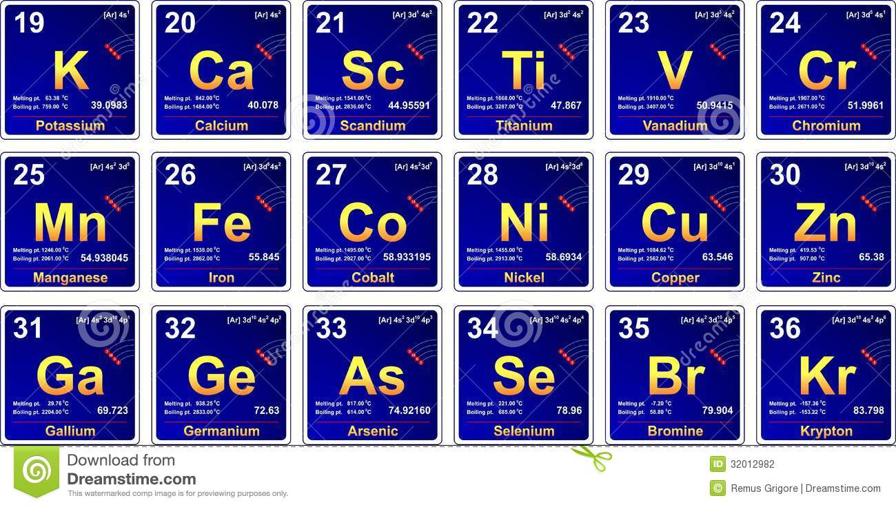

PERIOD 4

A period 4 element is one of the chemical elements in the fourth row (or period) of the periodic table of the elements.
The periodic table is laid out in rows to illustrate recurring (periodic) trends in the chemical behaviour of the elements as their atomic number
increases: a new row is begun when chemical behaviour begins to repeat, meaning that elements with similar behaviour fall into the same vertical columns.
The fourth period contains 18 elements beginning
with potassium and ending with krypton – one element for each of the eighteen groups.
It sees the first appearance of d-block (which includes transition metals) in the table.